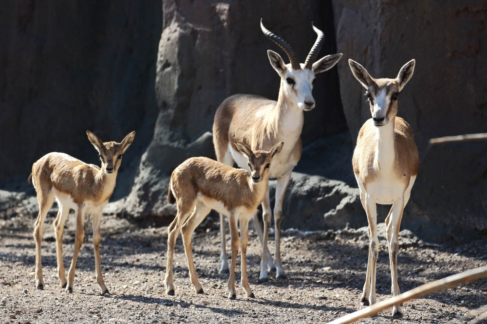

Ceylan, zarif yapısı, ince uzun bacakları ve yüksek hız yeteneğiyle bilinen, Afrika ve Asya’nın bozkır ve çöllerinde yaşayan otçul bir memelidir; Türkiye’de ise özellikle Şanlıurfa ve Gaziantep çevresinde koruma altındaki popülasyonlarıyla dikkat çeker. Ceylan, boynuzlugiller (Bovidae) familyasına ait Gazella ve Procapra cinslerini kapsayan çift toynaklı bir türdür; kahverengi, sarı, siyah ve beyaz tonlarda kürküyle çevresine uyum sağlar, ortalama 10–12 yıl yaşar ve saatte 100 km’ye varan hızlara ulaşabilir. Zarif ve uyanık yapısıyla doğada avcıların hedefi olsa da ani zıplama ve refleksleri sayesinde kaçış şansı bulur. Hem Afrika savanlarında hem Asya bozkırlarında sürüler halinde yaşayan bu canlı, otçul beslenir ve doğanın en hızlı koşucularından biri olarak bilinir.